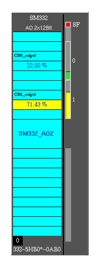
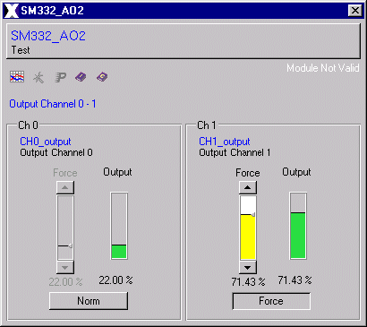

| Analog Output sm332_ao2 x 12Bit |
This analog output module SM 332 AO2 includes
four outputs with a resolution of 12 bit. It can be used in a S7-300 or
in a Profibus DP Slave-System (ET200M IM153).
The module converts the digital value
to a analog process signal with its resolution.
Features | Installation | User Interface | Configuration | Implementation Notes | Modification History
The sm332_ao2 class is comprised of the following
components (files):
| Class Component | Description | File Name(s) |
| Class Color File | Defines the local color for the class. | sm332_ao2.color |
| Class File | Includes the process picture
representation and any popup
menus. |
sm332_ao2.symbol
|
| Symbol File | Symbol used in the class. | analogdevices_ao_selrange.symbol |
| Enumerator File | Defines the enumerator for the class. | sm332_ao2.enum |
| Graphic Files | Class Specific Graphic Files for both, class definition and documentation. | axclassdoku16.bmp
axclassdoku_grey16.bmp axinstanzdoku16.bmp axinstanzdoku_grey16.bmp axparam16.bmp axparam_grey16.bmp axservice16.bmp axservice_grey16.bmp axtrend16.bmp axtrend_grey16.bmp (and some documentation
|
| HTML Document | HTML document for Online Help. | sm332_ao2.htm |
Features | Installation | User Interface | Configuration | Implementation Notes | Modification History
The SM332 AO2 user interface includes a process picture representation and several popup menus. The SM332 AO2 process representation is shown in Figure 2. The SM332 AO2 popup menus include the operater interface, shown by Figure 3.
The SM332 AO2 process picture has a unique name identifier ($Instance) for the SM332 AO2 displayed in the middle of the picture (SM332_2AO). Each channel is visualized by a slider and a value display. The channels are displayed above the unique name identifier. If a channel's value is forced by using the operater interface the rectangle above the value display change its color to red. The rectangle at the top right signalled a service fault and the black rectangle at the bottom left shows the module position.

Figure 2: SM332 AO2 Graphical Representation
Using the left mouse
button down at one of sliders on SM332 AO2 process
representation causes
the Operations Interface window, Figure 3, to be
opened on the computer
screen.

Figure 3: SM332 AO2 Operations Interface
The SM332 AO2 operater graphic also includes the Instance name or the Analog Output SM332 AO2 and below it there is a comment describing the Analog Output unit. The button which hosts the Instance name and the comment can close the popup.
The operater interface is splitted in two parts, for each channel one. The right slider shows always the real output value. With the button at the bottom of each channel section the mode could be changed from normal mode to force mode. Then the output value can be force by the left slider which isn't sensitive as long as the button shows "Norm". This means that output value is simulated with a variable value edited by a slider to test the plc programs without any I/O's.
The right text above the channel section
signalled whether the module or the data is valid. This text dis appear
only if the module and the data is valid.
Features | Installation | User Interface | Configuration | Implementation Notes | Modification History
The following table lists the configuration parameters
for the Analog Input
SM332 AO2. The parameter data type, the default
values and a brief
description are listed. The grey shaded rows cotains
parameters which must
not be changed.
|
|
Variable |
|
|
Description |
| 1 | CH0 | REAL | 0 | Output channel 0 |
| 2 | CH1 | REAL | 0 | Output channel 1 |
| 3 | Connection | STRING | ... | With the instance name of the following unit the next unit will be connected to this one. |
| 4 | DataValid | BOOL | NO | YES if the profibus DP communication is valid. |
| 5 | OutputData[4] | USINT | 0 | Output data array used by profibus DP and handles the analog outputs of this module. |
| 6 | ModuleValid | BOOL | NO | YES if the module itself has no error. |
| 7 | error_msg[10] | STRING | ... | Error message array. |
| 8 | ModulePosition | USINT | 0 | Shows the position of the module in an order. |
| 9 | ModuleName | STRING | 6ES7
331-7KF0*-0AB0 |
It's the module name which is checked with the GSD file of the profibus DP slave (constant). |
| 10 | UsrPrmDataValid | BOOL | NO | YES if the user parameter data (UsrPrmData) is valid. |
| 11 | UsrPrmDataLen | USINT | 0 | The real UsrPrmData length of this module. |
| 12 | UsrPrmData[24] | USINT | 0 | User Parameter Data array used by profibus DP and handles the parameterization of the channels. |
| 13 | Force[2] | BOOL | NO | The bits in this array set the force module of each channel. |
| 14 | ModuleRange[2] | ENUM:Config | deact. | Select measuring range and measuring mode for each channel cluster. |
| 15 | Globaldiag[2] | BOOL | NO | collecting diagnosis. |
| 16 | DiagAlarm | BOOL | NO | diagnosis alarm. |
| 17 | DefaultValue[2] | UINT | 0 | startup data, or is used if no last data is avaliable. |
| 18 | HoldLastData[2] | BOOL | NO | YES holds the last data at bus failure. |
| 19 | DataFormat | USINT | 0 | Changes the data format S7/M7-S5. Depends on DP slave. |
The "sm332_ao2.color" file contains the
SM332 AO2 class color definitions. This file holds all defined class color
schemes. The SM332 AO2 defined colors are:
| Color | Default RGB Values |
| S7-BG | 80/100/80 |
| S7-Label | 0/255/255 |
The "sm332_ao2.symbol" file contains the Analog Output SM332 AO2 class definition for AutomationX. This file holds the user interface, the pop-up menus, the class parameters, and the logic.
Features | Installation | User Interface | Configuration | Implementation Notes | Modification History
Qualities: The SM332 AO2 x 12Bit is characterized by the following qualities:
- 2 outputs in 2 channel clusters
- the outputs are optionally as
~ tension output
~ current output
- resolution 12 bits
- parametriable diagnosis
- parametriable diagnosis alarm
- parametrialbe replacement value edition
- isolated compared to CPU and load
supply according to channel
Features | Installation | User Interface | Configuration | Implementation Notes | Modification History
The following table lists the modifications made
to the sm332_ao2 class.
| Item | Date
(m/d/y) |
Name | File | Description | Reason |
| 1 | 04/06/97 | Manfred Dobaj | Initial Design | ||
| 2 | 15/07/98 | Manfred Dobaj | Redesign the user interface | ||
| 3 | 23/02/99 | Jürgen Tossold | Graphical Class Standard |
Features | Installation | User Interface | Configuration | Implementation Notes | Modification History